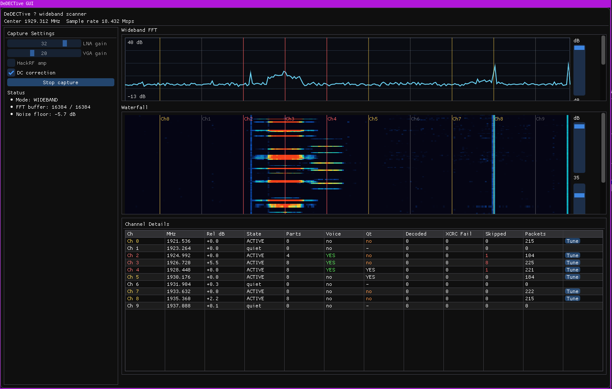
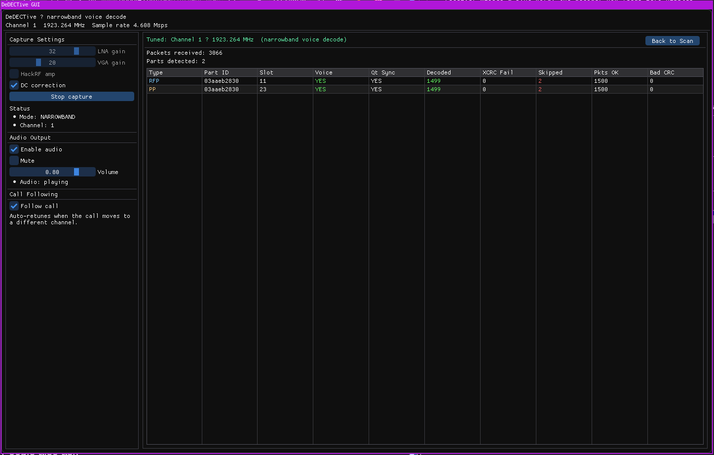
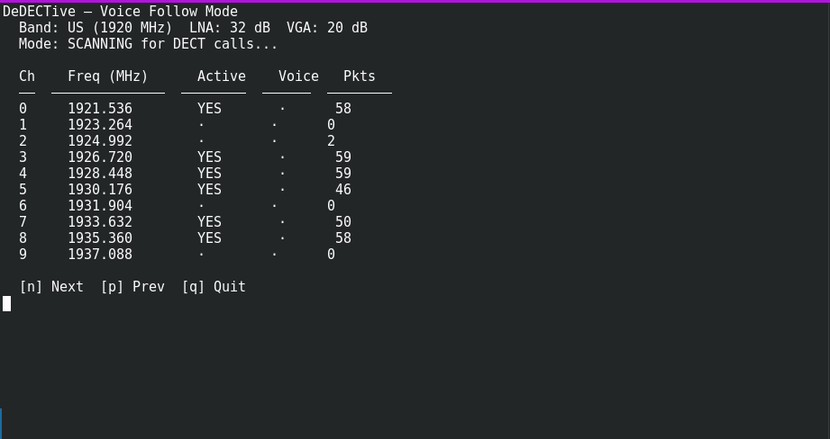
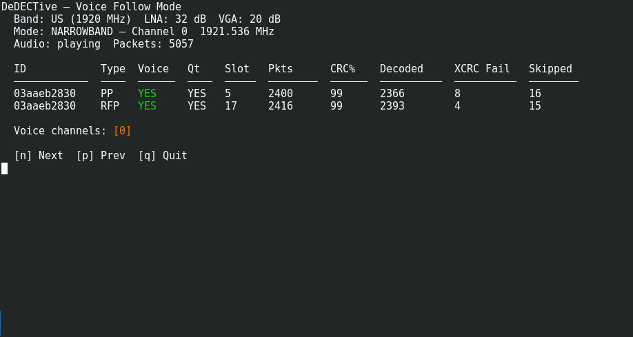
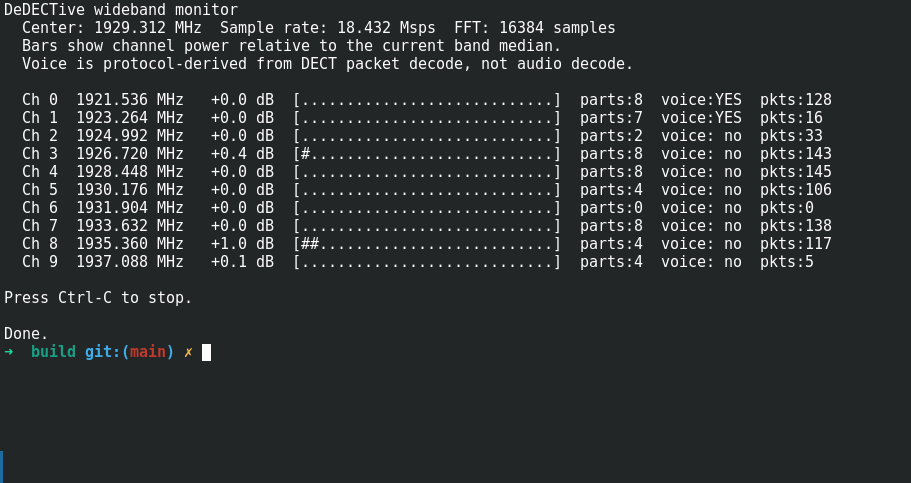

Welcome to the cordless underground.
DeDECTive is a DECT 6.0 scanner and voice decoder for the HackRF One. The main project targets Linux with native GUI and CLI frontends, and now also includes an in-tree Android preview app that reuses the same DECT decode pipeline through Flutter + FFI.
On desktop, DeDECTive captures the full DECT band in one wideband pass, exposes per-channel packet and voice activity, and retunes into narrowband mode for live G.721 voice playback with both sides of the call mixed together. The Android app follows the same wideband-scan / narrowband-follow design, but it is still being tuned against real phone + HackRF hardware.
What it does
- Captures the entire DECT band in a single HackRF pass at 18.432 Msps on the Linux desktop frontends.
- Shows live FFT, waterfall, and per-channel DECT activity with packet, voice, and Qt sync state.
- Supports both voice-follow scanning and fixed-channel investigation modes.
When a call appears
- Retunes to a single channel for 4.608 Msps narrowband G.721 ADPCM voice decode.
- Mixes RFP base-station audio with PP handset audio.
- Tracks channel handoffs with automatic Follow Call retuning and returns to scan after silence.
Why hackers care
- Clean native architecture with a reusable C++ core plus Linux and Android frontends.
- Built-in DC spike correction, FFT smoothing, and gap filling for smoother audio.
- Fast setup for RF labs, protocol research, cordless phone test benches, and SDR experiments.
Live screens from the field





Signal tricks inside
- IIR high-pass filtering to tame the HackRF DC spike.
- Fast-attack / slow-decay FFT smoothing for a cleaner spectrum display.
- Sequence-gap filling with G.721 comfort noise to reduce clicks.
- Timeslot and part tracking across slots 0-11 downlink and 12-23 uplink.
CLI commands you can brag about
./build/dedectivestarts voice-follow mode../build/dedective -eswitches to EU band support../build/dedective -W -lopens the text wideband monitor.n,p, andqcontrol voice-channel flow from the keyboard.
Architecture snapshot
- dedective_core handles HackRF I/O, packet RX/decoder, wideband monitoring, audio, and codec logic.
- dedective is the command-line frontend.
- dedective_gui provides the Dear ImGui desktop UI.
- DeDECTive-Android is a Flutter app with native FFI/JNI bindings to the same DECT core concepts.
Quick start download zone
Build the Linux desktop tools with CMake and the usual native dependencies, then drop into the Android app directory if you want the in-progress mobile build.
cmake -S . -B build -DCMAKE_BUILD_TYPE=Release
cmake --build build -j
# GUI (recommended)
./build/dedective_gui
# CLI voice-follow
./build/dedective
# CLI EU band
./build/dedective -e
# CLI wideband monitor
./build/dedective -W -l
# CLI fixed channel voice decode
./build/dedective -c 0 -V -l
# Android preview app
cd DeDECTive-Android
flutter pub get
flutter build apk --debug